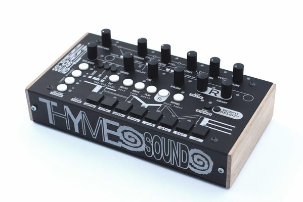

Thyme
This pages provides documentation for users of Bastl Instruments' Thyme effects processor.

Manual
There are two kinds of manuals for different use cases or personal preferences:
- The Short Manual tells you the minimum you need to know to get started. A printed version is shipped with the device.
- The Full Manual explains the core concepts and all the features in detail. It is only available online.
Videos
THYME Effects Processor Explained
20 Sounds No Talking
Destructive Looping
Firmware Updates
Firmware updates can be installed via MIDI as described in the manual. You will need to download our Sysex-Playback App which is available for Linux, MacOS and Windows.
To find out what version your device is currently running on, compare the displayed ID with the ones from this table.
| Version | ID | Release Date | Download | Changes |
|---|---|---|---|---|
1.0 |
0 | April 2018 | MIDI File | Initial Version |
1.0.2 |
1 | Mai 2018 | MIDI File | Fixed Bug: Crash when enabling SYNC while CLK or MIDI is selected as the clock source Fixed Bug: Main delay would jump to zero if COARSE and FINE are set to full Fixed Bug: Robot RATE and SHAPE not frozen properly when selecting a different robot or changing the MODE |
1.1.0 |
2 | Juni 2019 | MIDI File | comming soon |
Copyright: Bastl Instruments - CC BY-SA 4.0